Backend Developer · .NET / C#
I build robust and scalable systems.
Specialized in C#, .NET Core, ASP.NET and SQL Server.
I'm a junior backend developer specialized in C# and .NET, with solid knowledge in object-oriented programming, data structures and design patterns.
I currently work as Head of Systems and Telecommunications at Ital Farma S.A., leading IT and infrastructure projects in a demanding corporate environment.
My background in game development gave me a strong technical foundation in software architecture, design patterns and complex problem-solving. I now apply that same mindset building REST APIs, enterprise applications and backend systems with ASP.NET Core and SQL Server.
I enjoy breaking down complex problems and finding clean, efficient solutions.
I quickly adapt to new technologies, tools and work environments.
I currently lead the IT and infrastructure area of a pharmaceutical company, coordinating projects and teams.
I've collaborated in multidisciplinary teams across game dev, corporate IT and software development.
I bridge the gap between technical and non-technical stakeholders clearly and effectively.
I'm always studying, building side projects and exploring new areas beyond my comfort zone.
Ital Farma S.A.
✦ IT process optimization and improvements in technological infrastructure
Ital Farma S.A.
Gate Gourmet SRL
UADE · 2022 – 2025
Intermediate degree: Technician 2025UADE · 2021 – 2022 (resuming)
Projects focused on architecture, business logic and code.
Enterprise tool that reduced a 3-hour process to 3 minutes. Generates files in multiple formats for pharmaceutical clients.
View details →Migration of the desktop app to a modern web architecture with REST APIs. More robust and professional code.
View details →Carnival game in pure C#. The project where I first applied inheritance, interfaces and design patterns.
View details →Experimental FPS prototype with attraction and combat mechanics. The project where I applied the most design patterns.
View details →Mobile game with cloud save. I learned to handle touch inputs and online data sync.
View details →My first Unity project. A wizard defeating enemies. Everything was continuous learning from scratch.
View details →Projects where my role was artistic — character design, maps, animations and effects.
2.5D roguelike inspired by Latin American culture. I developed all the visual assets of the game.
View details →2v2 penguin multiplayer. My role was in art: characters, map, animations and visual effects.
View details →Stealth game where a thief steals the golden banana from a museum guarded by geese.
View details →My first Unreal Engine project. I learned Blueprints, cinematics and procedural tools.
View details →I'm open to new job opportunities, freelance projects or simply exchanging ideas. Feel free to reach out.
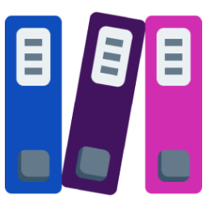
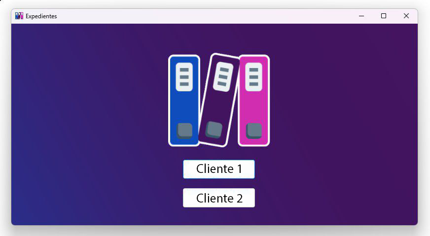
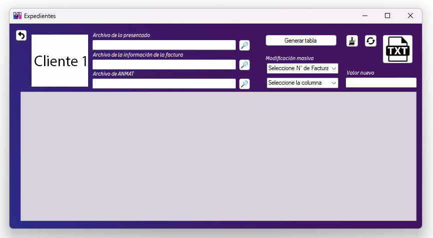
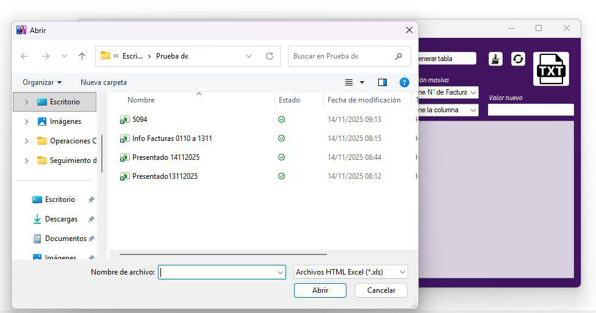
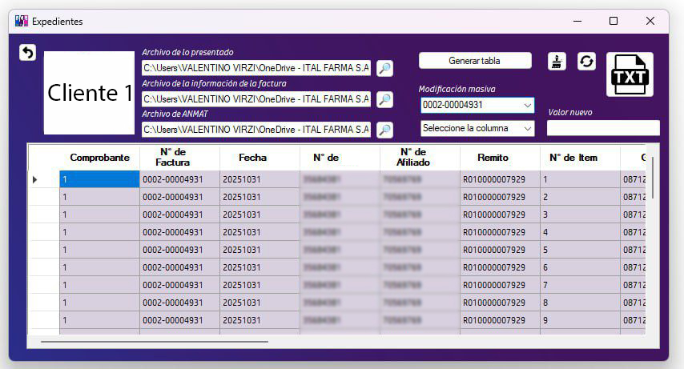
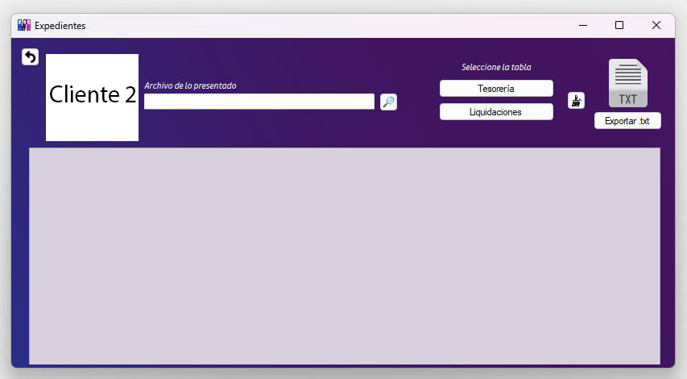
Desktop application built in C# WinForms to automate the generation of billing files for pharmaceutical clients. Each client requires a different format to process payments — this tool handles it in one click.
The system processes files downloaded from the Ralpharma system and converts them automatically: two clients receive .txt files with a specific format, and a third client requires a QR code per invoice exported as PDF, ready to print.
Includes a bulk field editing tool to quickly fix errors without editing file by file.
The biggest challenge was time: the tool had to be ready and working before noon to avoid interrupting business operations.
Patterns applied: Factory, Interfaces, Inheritance, Polymorphism.
Evolution of the original App Expedientes into a modern web architecture. The code was rewritten from scratch with a more robust and professional approach using ASP.NET Core and REST API architecture.
The main challenge is the conceptual migration: rethinking a desktop application in terms of services, endpoints and DTOs, keeping all business logic intact but adapted for the web.
Technologies: .NET, ASP.NET Core, REST APIs, DTOs, Interfaces, Inheritance, Polymorphism.
Carnival game simulation built entirely in C#, without a graphics engine. It was the project where I first applied inheritance and learned about interfaces.
Implements a generic Object Pool for object reuse, entity creation with Factory, global state with Singleton, and a class hierarchy with inheritance and polymorphism. Also includes unit tests to validate system behavior.
Experimental first-person prototype. The player has two weapons: one that attracts ghosts and one that damages them. The goal is to knock down ghosts coming out of a portal and trap them in jars scattered around the map.
The project where I implemented the most design patterns simultaneously: Flyweight for memory optimization, Abstract Factory for entity creation, Observer for system communication and Command for player actions. Also my first project with custom shaders.
Mobile game. The player must eliminate bugs appearing on screen, each with its own unique movement pattern. You have several weapons (slipper, newspaper, fly swatter, hand) and must score as many points as possible in 30 seconds.
This was the project where I learned to sync data with the cloud and handle touch inputs on mobile screens.
Patterns applied: Inheritance, Polymorphism, Abstract Factory, Flyweight, Interfaces.
My first Unity project (2022). A wizard that defeats enemies in combat. It was the starting point of all my game development learning — every aspect was new: the engine, the workflow, the architecture.
I implemented Singleton for global state management and Object Pool for efficient object reuse in the scene.
2.5D roguelike inspired by Latin American culture. The world is 3D but all assets are 2D — a visually complex combination inspired by Cult of the Lamb.
The player takes on the role of an Ekeko and explores dungeons by choosing cards at the start of each run, each with a different special room (8 options: treasure, rest, spirituality and more). The relic and augury system adds strategic depth: collecting relics of the same class unlocks synergies with multiple power levels.
My role: I developed all visual assets — characters, decorations, floors, icons, UI and animations. The biggest challenge was creating 2D sprites that worked coherently within a 3D environment.
Online 2v2 multiplayer game. Players are penguins throwing snowballs, competing to stay on a combat arena split into 3 sections that fall progressively, shrinking the play area over time.
My role: full art — character design, map, animations and visual effects. This project helped me understand how online multiplayer games work and the synchronization challenges they involve.
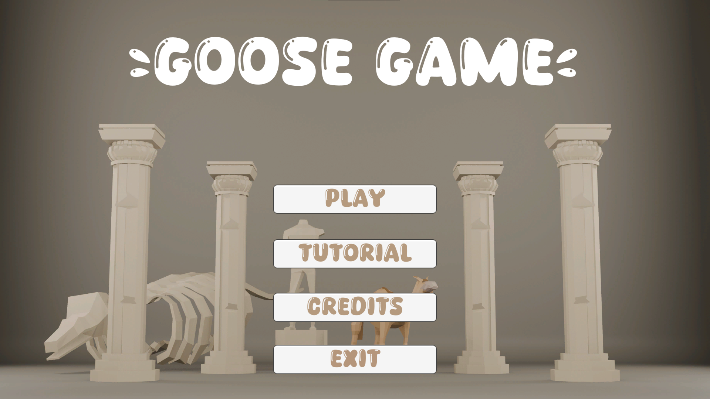
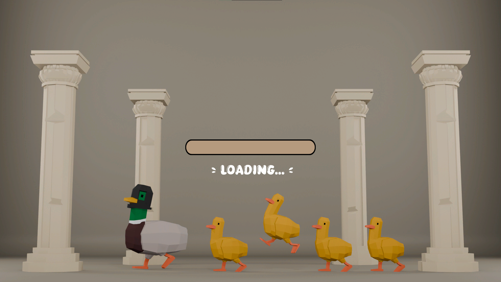
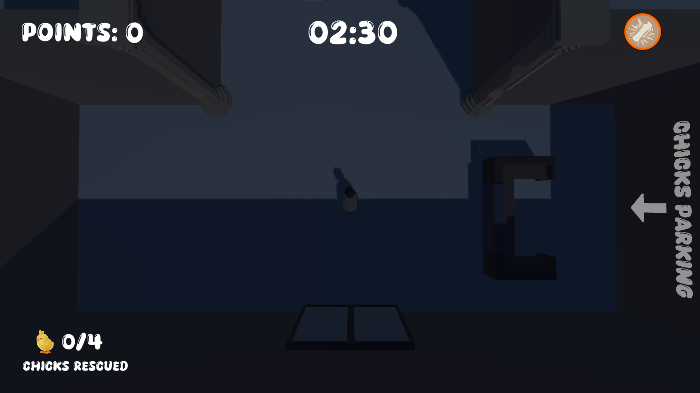
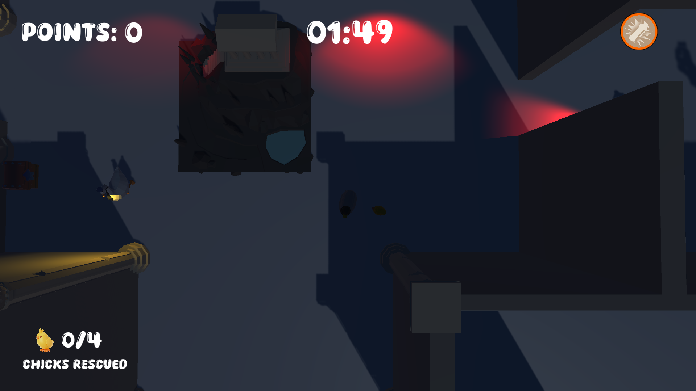
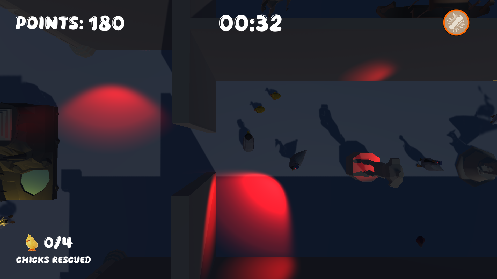
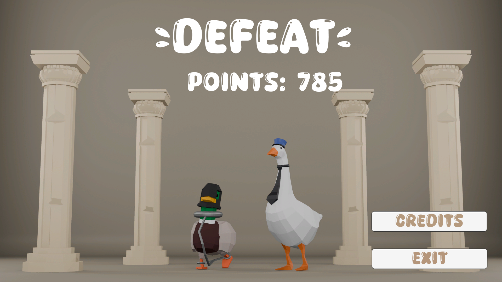
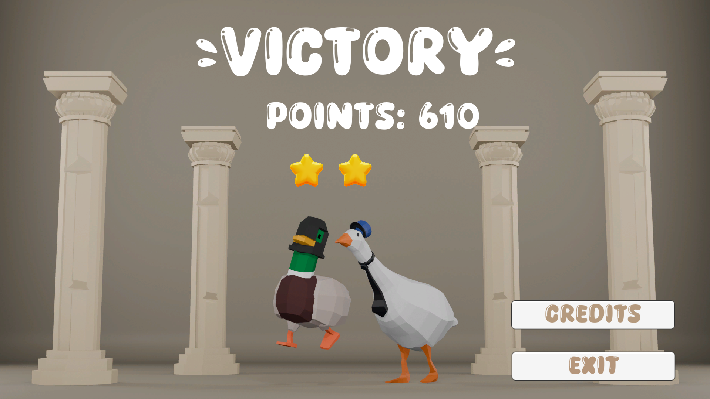
Stealth game where the player is a thief who must steal the golden banana from a museum guarded by geese with artificial intelligence.
My role: the artistic side of the game. Participating allowed me to deeply understand how enemy AI works — its states, field of view and how it reacts to the player.
My first Unreal Engine project. Switching from Unity to Unreal was like learning to walk again — a completely different way of thinking about game development.
I learned to work with Blueprints, implement cinematics, build an interactive object menu and create procedural tools for content generation.